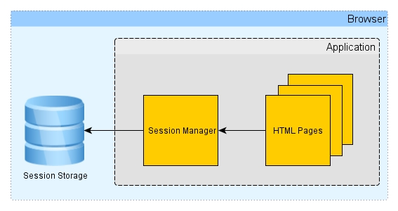
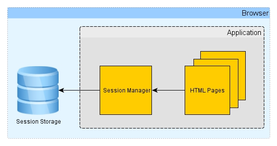

¿Qué es SessionStorage en JavaScript?
La propiedad sessionStorage permite acceder a un objeto Storage
asociado a la sesión actual. La propiedad sessionStorage es similar a localStorage,
la única diferencia es que la información almacenada en localStorage no posee tiempo de expiración, por el contrario, la información almacenada en sessionStorage es eliminada al finalizar la sesión de la página. La sesión de la página perdura mientras el navegador se encuentra abierto, y se mantiene por sobre las recargas y reaperturas de la página. Abrir una página en una nueva pestaña o ventana iniciará una nueva sesión, lo que difiere en la forma en que trabajan las cookies de sesión.
Cuando abre una página en una nueva pestaña o ventana, el navegador web crea una nueva sesión.
Si abre varias pestañas o ventanas con la misma URL, el navegador web crea una separada sessionStoragepara cada pestaña o ventana. Por lo tanto, no se puede acceder a los datos almacenados en una pestaña del navegador web en otra pestaña.
Cuando cierra una pestaña o ventana, el navegador web finaliza la sesión y borra los datos del archivo sessionStorage.
Los datos almacenados en el sessionStorageson específicos del protocolo de la página. Por ejemplo, un mismo sitio javascripttutorial.nettiene diferentes sessionStorageal acceder con las teclas httpy https.
Dado que los sessionStoragedatos están vinculados a una sesión de servidor, solo están disponibles cuando se solicita una página desde un servidor. no está disponible cuando la sessionStoragepágina se ejecuta localmente sin un servidor.
Información adicional de SessionStorage
Ventajas de SessionStorage:
- El acceso a la información es rápido, dado que los datos se almacenan de la manera llave-valor
Desventajas de SessionStorage:
- Los valores se pierden una vez que se cierra la ventana
- Los valores que almacena no pueden ser compartidos entre más de una ventana
Cuando los datos se actualizan en localStorage o en sessionStorage, se dispara el evento storage el cual es la interfaz Storage de la API de almacenamiento web provee acceso al almacenamiento de la sesión o al almacenamiento local para un dominio en particular, permitiéndote por ejemplo añadir, modificar o eliminar elementos de dato almacenados. Si deseas manipular el almacenamiento de sesión para un dominio, debes llamar al método Window.sessionStorage entonces cuando se dispara el evento storage con las propiedades:
- key: la clave que ha cambiado, (null si se llama .clear()).
- oldValue: el anterior valor (null si se añade una clave).
- newValue: el nuevo valor (null si se borra una clave).
- url: la url del documento donde ha pasado la actualización.
- storageArea: bien el objeto localStorage o sessionStorage, donde se ha producido la actualización.
Ver imagen del lado para sintaxis
 

Ejemplo de SessionStorage.
Entrar a la página que contiene el ejemploAl lado derecho tenemos un código sobre una aplicación que utiliza el sistema o la propiedad de SessionStorage para realizar el registro de un alumno a un equipo del Colegio Don Bosco, al alumno se le solicita la información, una vez la ingresa tendra acceso a la opciones de Inscribir equipo, Limpiar datos de la sesión y eliminar lista.
Función Iniciar.
Con esta función lo que se hace es inicializar todos los controles para poder manejar los eventos de cada uno de ellos cuando esta función se ejecute.
Función Principal(Inscribir).
Lo primero que se hacer ejecutarse esta función es comprobar si nuestro navegador soporta este tipo de almacenamiento por medio de SessionStorage,
al igual que de una vez se comprueba que dentro del navegador se encunetre el objeto Storage
Con la estructura for lo que se hace es obtener cada uno de los valores ya sea los que estan ingresados por medio de un input de tipo text
o una etiqueta select.
Luego utilizamos el primero metodo que es para Almacenar el valor por medio de setItem y con el metodo de JSON.stringify convertmos todos los datos en un arreglo,
este arreglo l momento de enviarlo al navegador hace que el arreglo original
se haga un string separado con ","
Casi finalizando utilizaremos un metodo para mostrar los datos en tabla primero tenemos que usar el método
JSON.parse y mandarle como parametro un "getItem" para que podamos obtener el valor.
Para imprimir los valores hacemos un recorrido de los 4 valores que se le solicitan al usuario para generar un campo de tabla por cada elemento que se vaya a imprimir, el console.log se utiliza para visualizar que el arreglo creado
Función Limpiar y Eliminar Lista.
Con la función Limpiar lo único que hacemos es utilizar la propiedad del SessionStorage.removeItem para que se limpien todos los datos de la sesion y finalmente con la otra función unicamente agregamos espacios en blanco para que la tabla se limpie.